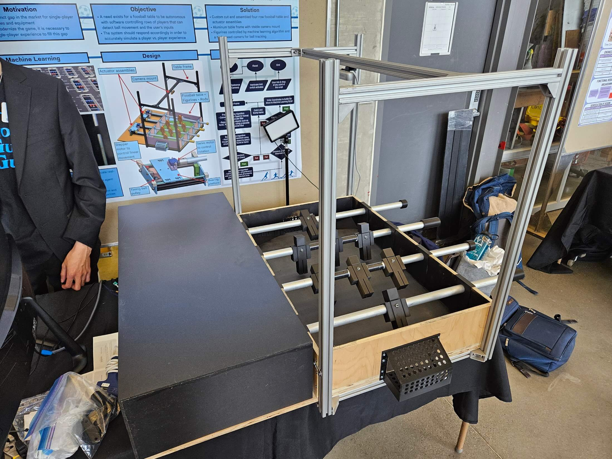
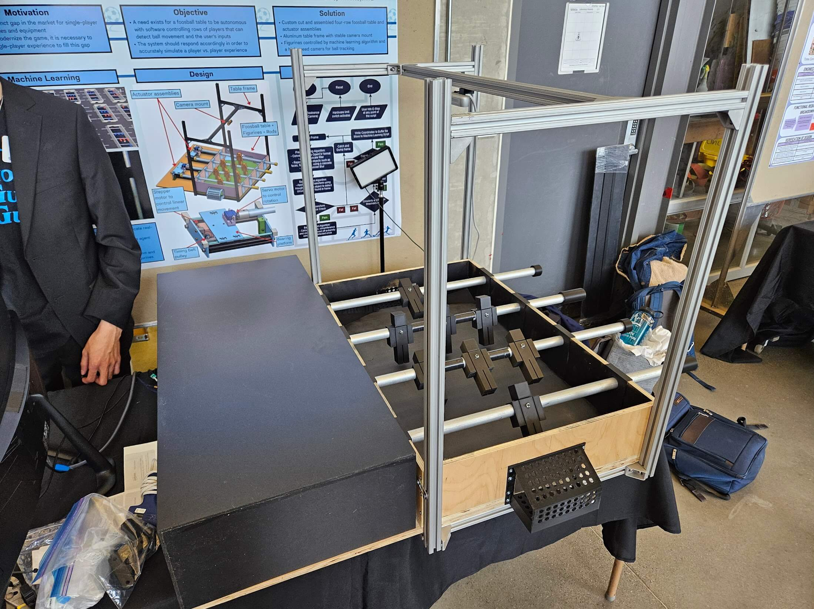
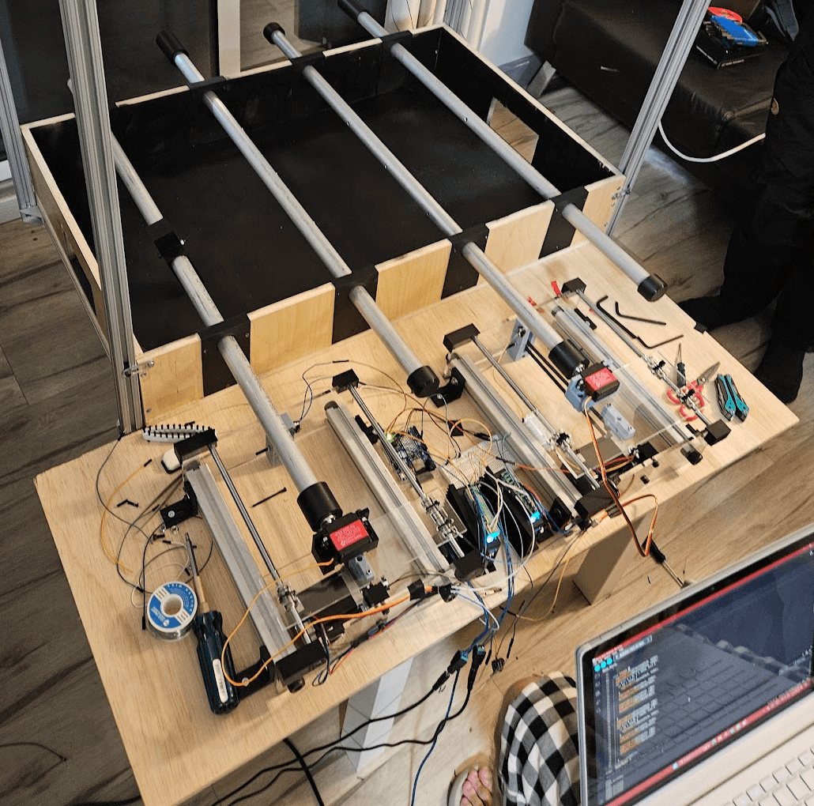

Projects
-
Toy Design Project [Dec 2019]
This project was a first year design project created with 3 other students to create an idea for a toy designed for pre-adolescent children. The concept was a battery powered top that would spin, and would also have a detachable lid that would spring off when it came into contact with anything, ejecting a toy from inside.
Part of my role in the project was to design the spring assembly casing for the inside of the top and also the lid, which were both designed entirely on SOLIDWORKS. The parts were then 3D printed and prototyped using GrabCAD Print and printers at the university labs. Various prototypes were created and experimented with and it was an excellent introduction to designing based on criteria and constraints.

Click here to see some additional info and the designs in 3D on GrabCAD!
-
Coin and Bill Sorting Machines [Aug 2020]
At the outset of the global pandemic, COVID-19 was at the forefront of everyone's mind. For our product design challenge proposed during the school term, we decided to approach a solution to a COVID-19 related problem by attempting to minimize the chance of transmission between cashier workers and customers during cash transactions. It should be mentioned that these designs were created with Canadian currency in mind. All Canadian coins have its own distinct diameter depending on its denomination and the bills of different denominations all have a different colour as well.
Coin Sorter
The coin sorting machine was designed as a fully mechanical machine for simplicity (and also for a realistic analysis of our skills at the time). It was designed on SOLIDWORKS and the basic function is to sort inserted coins one by one from largest to smallest diameter.
Coins will be inserted into the slot on the right and they will roll down via gravity. They will then roll out through specifically designed windows once they hit the notch that matches it's diameter. Notches are designed so that the largest coins roll through the first hold and smaller coins will roll past the notches until it hits the notch it was designed to hit. Notches are also slightly curved to allow coins to fall more naturally out the windows.
There is an auxilliary function of using either light or motion sensors and an Arduino seven segment display to add and display the total monetary value of the coins inserted.

Bill Sorter
The bill sorting machine was also designed on SOLIDWORKS and contains some electronic components. Bills would be inserted one by one into the cash intake container at the top of the machine.
A colour sensor would be used to detect the bill's colour as it is rolled forward and slipped into the internal tray. Depending on the colour, the tray will move side to side via the linear motion track and stop in front of the correct compartment.
The tray will then be rotated into the downward position in order to slide the bill into its dedicated compartment. The tray will then return to the upright position and move back to the start in order to accept another bill. Since bills cannot be accepted while the internal tray is in motion, there could either be lights or an opening/closing flap to indicate when another bill can be inserted.

Click here to see some additional info and the designs in 3D on GrabCAD!
-
Production Part Plate Mold [Jul 2021]
As a Production Engineering Intern at Vexos in Toronto, I used their wide array of 3D printers to print designs that could be used to help with or speed up manual production. One of the designs that can be shown is is a tool mold that was requested by the production team. The white part that can be seen below on the right was a custom part that needed a circuit board to be affixed to it manually. The production team requested a method to be able to hold the part in place so that both hands would be free to work.
First, the custom part was precisely measured and then the mold was designed on SOLIDWORKS. The first prototype was 3D printed using the Ultimaker Cura software and 3D printer and these prototypes were tested by production to collect feedback and potential improvements. Notes and markings were made and the mold was redesigned to fit the needs of the production team before being inserted as a permanent part of the workflow.
The solution was a rectangular mold with a shaped indent of the part so that it would fit into the mold. The entire mold was then inserted into the workbenches, which had a foam surface that could be cut into and manipulated so that the molds could be a part of the production workbenches.
-
ISO 13485 Equipment Validation for Medical Devices [Aug 2021]
With the new challenges that COVID-19 caused during the pandemic, many manufacturing companies decided to enter the medical industry to assist with the fight against eradicating the virus and also provide for people who are affected. With this new direction, companies like Vexos (an electronics manufacturing company) have decided to become certified in compliance with the ISO 13485 standard for the manufacturing of medical devices. More specifically, the ISO 13485 standard places an emphasis on documentation for the equipment that is used to manufacture medical devices.

Vexos is wanting to participate more in the medical industry in the future, so having their equipment well documented and in compliance with the standard is a project they are eager to pursue. As a Production Engineer Intern, I took responsibility over this project to begin the company's journey into medical equipment manufacturing.
The objective of this project is to pass the external audit for complying with the proper standard for the manufacturing of medical devices and systems at Vexos. Vexos is already certified for the ISO 9001 standard, so complying with the ISO 13485 standard will only require some additional items, the most complex item being centralized documentation for all equipment, machines, and tools that will be used for manufacturing of medical devices. I named this centralized document the Equipment Validation Protocol (EVP) and the final version contains 12 forms that should be filled in. The table of contents for the EVP I created can be seen below. Each machine, device, or tool being used for medical device manufacturing should have an EVP filled out, verified, and stored in an easily accessible area.

These forms require a mix of equipment validation qualifications. As a result, some forms require proof of certification and others require validation tests to be performed. One of the forms on the document involves certification from an external supplier. To gain this certification, an inspector from an external supplier must perform an on-site field evaluation of the machine. When booking the field evaluation, cost comparisons were made between 3 different suppliers for each visit to determine the cheapest one with the best availability, which was finalized to be CSA (Canadian Standards Association). The progress was also able to be tracked based on the percentage of machines that have been certified by the chosen supplier.
By the end of my 4 month internship, the percentage of fully certified machines on the production floor rose from 0% to 26%. There was not enough time to fully achieve the objective due to the setup time required to create the EVP, the length of time it takes to book external quality tests, as well as my other responsibilities and projects. However the framework has been completely laid out in order to fully achieve the objective in only a couple more months.
-
Interactive Custom Cassette Player [Dec 2022]
This project was completed as a part of a Rapid Prototyping course while on an exchange term in Lund, Sweden. The final product was to be a robust box that is alluring to interact with and will deliver different forms of motion and feedback in order to elicit an emotion or reaction from the user.
First and Second Prototype

Mechanical Functions and Internal Design


External Design

-
Laser Cutting Template [Jan 2023]
As a design engineer intern at Lumentum, part of my role included designing and printing tools, jigs, and templates for engineering research and prototyping. One initiative that I was involved in was trying to implement laser cutting technology into the prototyping process that was used at Lumentum in order to build low cost, high precision templates.
Currently, the optical bench assemblies at Lumentum are rectangular 3D printed tools that can have many different features or holes cut out in them depending on the application. With some projects, the required tolerance is higher than the expected precision that 3D printing can provide, which is around +/- 400 microns, so the tools are sent to have the holes and features machined for a tighter tolerance. Many laser cutting machines nowadays can have tolerances of around +/- 20 microns and with an in-house laser cutting machine, lead times and costs can be greatly reduced. It can also be utilized for other future applications.

Designs and Drawings
First, initial research was done on 3D printing materials and types of laser cutting machines. The next step was to design a template that included holes and features that were similar to the optical bench templates, but not exactly the same, as they are protected under an NDA. This template included many holes and features such as chamfers, fillets, and rounded edges that are similar to ones that could be found on the real templates. An engineering drawing following the rules of GD&T was also created for the full template.
Click here to see some additional info and the designs in 3D on GrabCAD!


3D Printing
With the designs completed, the reference template was ready to be 3D printed, which can be seen below printed with ABS coloured in black. Samples with no holes or features cut out were also created so that they could be sent to laser cutting companies to be cut and returned for analysis. These samples varied in printing materials and thicknesses in order to test the cuts on each one.

Measuring the Features
Finally, the printed designs can be analyzed to check for accuracy and precision. This was done using a SmartScope 3D Multisensor Measurement System. It has a microscope camera and contains metrology software so that routines can be created and programmed to follow specific sets of accurate measurements that are repeatable. The two key words are: repeatable; so that samples can be quickly and easily measured when they are returned, and accurate; so that the data can be used to compare between different companies to see which machines offer more precision for their price.
Click here to see some additional info including the SmartScope program demo!
-
Goal Guard Guru (Robotic Foosball Table) [Mar 2024]

Motivation and Objectives
Like any other project, our final year capstone project started with brainstorming and coming up with potential ideas for projects we could pull off. A quick assessment of individual strengths lead to the conclusion that it should involve some type of mechanical assembly/prototype as the backbone, a vision system that would involve a high speed camera, and some involvement of software for our group member Kevin, who loves that kind of stuff.
With the combined knowledge of both our strengths and our interests, what resulted was the idea of a single player robotic foosball table with software controlling the opposing rows of players. Ball movements will be detected and the system should respond accordingly to simulate a player vs. player as accurately as possible. Below is an early sketch of what would eventually be the great Goal Guard Guru.

Final Design
The final design consisted of three subsystems that all interacted with each other: Mechanical, Vision System, and Machine Learning. A good summary of the project can be seen in the poster below, which I created from scratch for our group to present during the capstone symposium.
 

I also created a logo for our project to show some spunk and uniqueness and put it on T-Shirts for our group members to wear during the symposium.

Click here to see some videos and clips of the final product!
Mechanical Design Process
As a mechanical lead, there were multiple aspects of the mechanical parts of the project that needed to be designed, and then ultimately brought to life. These included the main body/table, the table frame and camera mount, and the actuator assemblies.
Main Body/Table
What started as a 3-row design was eventually scaled down to a 2-row design due to time and cost constraints. The foosball table itself was custom cut and assembled from 0.5" plywood with a playing area of 32" x 20". The extra wood on the side was made for placement of the actuator assemblies. The entire process can be seen in the images below from the preliminary CAD design, to the cutting and assembling of raw materials, to the final build.
Table Frame and Camera Mount
In addition to the table itself, a table frame was created out of 1" 80/20 aluminum rails to structurally support the build. It also acted as a camera mount in order to mount the Intel RealSense high speed depth camera at a specific height where the field of view could capture the entire playing field.

Actuator Assemblies
To control the machine's rods, actuator assemblies were designed and build, each with two motors. The side to side movement was controlled by the stepper motor while the rotational movement was controlled by the servo motor. A timing belt and timing belt pulley attached to the stepper motor to allow for manual tensioning and a coupler connected the rod to the servo. The parts were either ordered and laser cut (like the acrylic walls and platform) or 3D printed in resin or PLA (like in the belt holder, coupler, or corners).